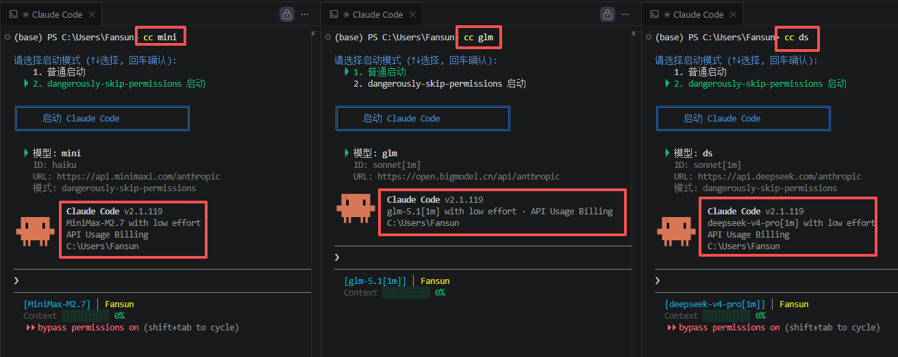

CC Start 帮你告别环境变量和配置文件的折腾。 一条命令装好一切，一个工具管理所有模型。
支持 Windows · macOS · Linux | 兼容 cc 和 ccs 命令

Claude Code 默认只认 Anthropic 自家模型——想用国产大模型？CC Start 让你彻底告别这些折腾。
自动检测 & 安装 Node.js、Claude Code，脚本直达 PATH，安装即用。
cc kimi → cc qwen → cc glm，一条命令换模型，比切歌还流畅。
每个终端独立配置互不干扰，4 个窗口跑 4 个模型。
cc add 三步上手，兼容任何 Claude API 服务。
Windows 桌面端提供图形界面，鼠标搞定一切配置。
Windows / macOS / Linux 通吃，CMD、PowerShell、Bash 全支持。
Windows 桌面端提供完整的图形界面。配置管理、连通性测试、一键启动——鼠标搞定一切。 和 CLI 共享同一份配置，改一端另一端立即同步。
不需要手动编辑 JSON、不需要记忆环境变量、不需要在不同终端间来回切换配置。CC Start 把这些全部自动化了。
每个模型已预置好配置模板，只需填入你的 API Key 即可启动。
兼容所有 Claude API 协议的服务，不限品牌、不限数量
下载 CC Start，一条命令搞定一切。